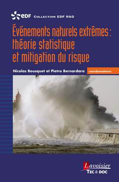
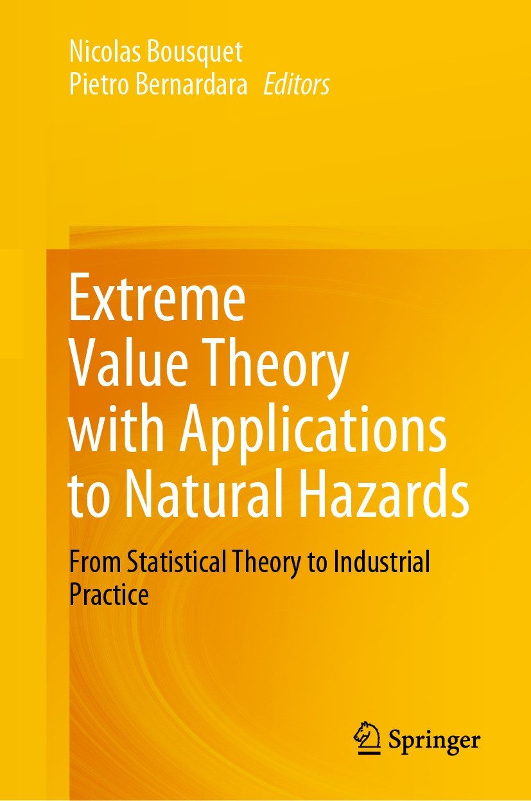
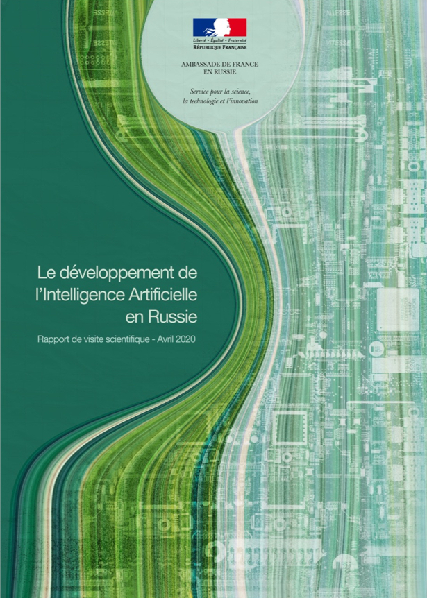
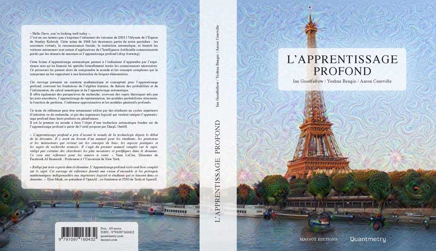
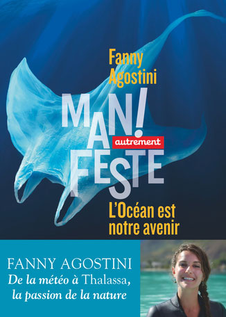
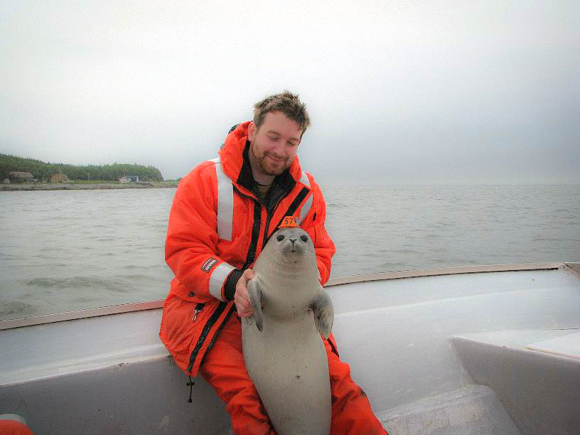

Desk (SU) 15-25.213
nicolas.bousquet 'at' sorbonne-universite.fr
nicolas.bousquet 'at' edf.fr
Bayesian modeling, treatment of uncertainties, machine /deep
learning, artificial intelligence
Risk analysis, health, industrial and environmental resource
management, natural hazards
Second-year Msc -- Modélisation et Statistique Bayésienne Computationnelle
( Bayesian Modeling and Computational Statistics)
Co-organizer of the UQSay seminar
Co-founder and head of the Scientific group of interest (GIS) LARTISSTE / UQ@Saclay
B. Ferrere, N. Bousquet, F. Gamboa, J.-M. Loubes (2026). Generalized Functional ANOVA in Closed-Form: A Unified View of Additive Explanations.
G. Rives, O. Lopez, N. Bousquet (2026). WTNN: Weibull-Tailored Neural Networks for survival analysis.
B. Ferrere, N. Bousquet, F. Gamboa, J.-M. Loubes, J. Muré (2026). Fourier Analysis on the Boolean Hypercube via Hoeffding Functional Decomposition.
B. Ferrere, N. Bousquet, F. Gamboa, J.-M. Loubes, J. Muré (2026). Exact Functional ANOVA Decomposition for Categorical Inputs Models , Proceedings of the International Conference on Machine Learning (ICML 2026).
N. Bousquet (2026). Computing conservative probabilities of rare events with surrogates .
B. Ketema, N. Bousquet, F. Costantino, F. Gamboa, B. Iooss, R. Sueur (2025). Fisher-Rao distance between truncated distributions and robustness analysis in uncertainty quantification Journal of Statistical Computation and Simulation (in press) .
B. Ketema, N. Bousquet, F. Costantino, F. Gamboa, B. Iooss, R. Sueur (2025). Geodesic non-completeness of the truncated normal family Geometric Science of Information , Lecture Notes in Computer Science, 16034: 32-40. .
R. Kazmierczak, S. Azzolin, E. Berthier, A. Hedström, P. Delhomme, N. Bousquet, G. Frehse, M. Mancini, B. Caramiaux, A. Passerini, G. Franchi (2025). Benchmarking XAI Explanations with Human-Aligned Evaluations The 40th Annual Conference on Artificial Intelligence (AAAI 2026) .
M. Il Idrissi, N. Bousquet, F. Gamboa, B. Iooss, J.-M. Loubes (2025). Hoeffding decomposition of functions of random dependent variables. Journal of Multivariate Analysis, 208: 105444.
N. Bousquet, M. Blazère, T. Cerbelaud (2025). Covariance constraints for stochastic inverse problems of computer models. Electronic Journal of Statistics , 19: 1809-1854.
M. Il Idrissi, N. Bousquet, F. Gamboa, B. Iooss, J.-M. Loubes (2024). Quantile-constrained Wasserstein projections for robust interpretability of numerical and machine learning models. Electronic Journal of Statistics, 18: 2721-2770
M. Lodi, N. Bousquet, P. Verde, M. de la Ferrière, K. Neuberger, S. Jankoswki, M.-P. Chenard, N. Reix, , D. Heitz, C.-L. Tomasetto, C. Mathelin (2024). Breast cancer characteristics in elderly women: a comprehensive cohort study of 7,965 patients Innovative Practice in Breast Health. , 1: 100001
F. Ouzoulias, N. Bousquet, M. Genu, A. Gilles, J. Spitz, M. Authier (2023). Development of a new control rule for managing anthropogenic removals of protected, endangered or threatened species in marine ecosystems PeerJ , 12: e16688. .
N. Bousquet (2023). Towards new formal rules for informative prior elicitation? A discussion of "Specifying Prior Distributions" Applied Stochastic Models in Business and Industry: 1-11.
M. Il Idrissi, N. Bousquet, F. Gamboa, B. Iooss, J.-M. Loubes (2023). On the coalitional decomposition of parameters of interest. Comptes-Rendus de l'Académie des Sciences, 361: 1653-1662
A. Simoulin, N. Thiebaut, K. Neuberger, I. Ibnouhsein, N. Brunel, R. Vine, N. Bousquet, J. Latapy, N. Reix, S. Molière, M. Lodi, C. Mathelin (2023). From free text electronic health records to structured cohorts: Onconum, an innovative methodology for real-world data mining in breast cancer Computer Methods and Programs in Biomedicine, 240: 107693.
J.-B. Blanchard, R. Chocat, G. Damblin, M. Baudin, N. Bousquet, V. Chabridon, B. Iooss, M. Keller, J. Pelamatti, , R. Sueur, N. Bousquet (2023). Fiche pédagogique sur le traitement des incertitudes dans les codes de calcul Report of the Tripartite Institute EDF-CEA-FRAMATOME.
M. Il Idrissi, N. Bousquet, F. Gamboa, B. Iooss, J.-M. Loubes (2022). Projection de mesures de probabilit\'e sous contraintes de quantile par distance de Wasserstein et approximation monotone polynomiale. Act. J. Statist..
L. Béthencourt, W. Dabachine, V. Dejouy, Z. Lalmiche, K. Neuberger, I. Ibnouhsein, S. Chéreau, C. Mathelin, N. Savy, , P. Saint-Pierre, N. Bousquet (2021). Guiding measurement protocols of connected medical devices: A statistical methodology applied to detecting and monitoring lymphedema. IEEE Access, 9: 39444-39465.
J. Roussel, S. Ancelet, S. Djazoubi, M.-O. Bernier, D. Ricard, N. Bousquet (2021). Inférence bayésienne de l'évolution de l'atropie cérbrale et de plages de leucopathie à partir de séquences IRM 3D non homogénéisées. Act. J. Statist.
N. Bousquet (2021). Bayesian Extreme Value Theory. In: Statistical Extreme Value Theory with Applications to Natural Hazard Engineering, Springer Nature
R. Adon, F. Arthur, G. Baquiast, G. Hochard, A. Kaid Gherbi, A. Nègre, A. Simoulin, F. Talaouit-Mockli, N. Bousquet (2021). Deep Learning : des usages contrastés dans le monde socio-économique. Statistique et Société, 8: 55-108
N. Bousquet (2019). Bayesian validation of attraction basins for block maxima extreme value models. Proceedings of MMR.
N. Benoumechiara, N. Bousquet, B. Michel, P. Saint-Pierre (2020). Detecting and modeling critical dependence structures between random inputs of computer models. Dependence Modeling (online)
C. Sonigo, S. Jankowski, O. Yoo, O. Trassard, N. Bousquet, M. Grynberg, I. Beau, N. Binart (2018). High-throughput ovarian follicle counting by an innovative deep learning approach. Scientific Reports, 8.
C. Sonigo, S. Jankowski, O. Yoo, O. Trassard, N. Bousquet, M. Grynberg, I. Beau, N. Binart (2018). Comptage des follicules primordiaux par deep learning : l'intelligence artificielle au service de l'étude de la reproduction. Annales d'Endocrinologie, 79, 225 + French short paper
N. Bousquet, T. Klein, V. Moutoussamy (2018). Approximation of limit state surfaces in monotonic Monte Carlo settings, with applications to classification. SIAM/ASA Journal of Uncertainty Quantification, 6: 1-33.
N. Bousquet (2018). Modeling extreme events in energy companies. In: Statistics Reference Online, Wiley.
N. Bousquet (2018). Modélisation bayésienne des extrêmes. In: Evènements naturels extrêmes. Théorie statistique et mitigation du risque, Lavoisier: Paris.
S. Fu, M. Couplet, N. Bousquet (2017). An adaptive kriging method for solving nonlinear inverse statistical problems. Environmetrics, 28 (4).
N. Pérot, N. Bousquet (2017). Functional Weibull-based models of steel fracture toughness for structural risk analysis: estimation and selection. Reliability Engineering and System Safety, 165: 355-367
L.J. Wolfson, N. Bousquet (2016). Elicitation. In: Statistics Reference Online, Wiley.
R. Sueur, N. Bousquet, B. Iooss, J. Bect (2016). Perturbed-Law based sensitivity analysis indices in structural safety. Proceedings of SAMO'16.
M. Keller, A.-L. Popelin, N. Bousquet, E. Remy (2015). Nonparametric estimation of the probability of detection of flaws in an industrial component, from destructive and nondestructive testing data using Approximate Bayesian Computation. Risk Analysis, 35:1595-1610
A. Pasanisi, C. Roero, E. Remy, N. Bousquet (2015). On the practical interest of discrete Inverse Polya and Weibull-1 models in industrial reliability studies. Quality and Reliability Engineering International 31:1161-1175
S. Fu, G. Celeux, N. Bousquet, M. Couplet (2015). Bayesian inference for inverse problems occuring in uncertainty analysis, International Journal for Uncertainty Quantification, 5(1):73-98
N. Bousquet, M. Fouladirad, A. Grall, C. Paroissin (2015). Bayesian gamma processes for optimizing condition-based maintenance under uncertainty, Applied Stochastic Models in Business and Industry, 31(3): 360-379
P. Lemaître , E. Sergienko, A. Arnaud, N. Bousquet, F. Gamboa, B. Iooss (2015) Density modification based reliability sensitivity indices, Journal of Statistical Computation and Simulation, 85:1200-1223
E. Dortel, F. Sardenne, N. Bousquet, E. Rivot, J. Million, G. Le Croizier, E. Chassot (2015). An integrated Bayesian modelling approach for the growth of Indian Ocean yellow fin tuna Fisheries Research, 163: 69-84
N. Bousquet, F. Corset (2015). Exploring the consistency of maximum likelihood estimator of imperfect repair ARA1 models based on a single observed trajectory Proceedings of MMR.
N. Bousquet, E. Chassot, D. Duplisea, M. Hammill (2014). Forecasting the major influences of predation and environment on cod recovery in the northern Gulf of St. Lawrence. PloS ONE 9(2): e82836
E. Parent, J. Bernier, A. Pasanisi, N. Bousquet, M. Keller (2014) Considérations décisionnelles pour la construction d'un ouvrage de protection contre les crues . In: Approches Statistiques du Risque, Technip.
N. Bousquet, F. Douard (2014) Analyse bayésienne d'intensités de défaillance pour les études de gestion d'actif . In: Actes Lambda-Mu (best paper award).
J. Bect, N. Bousquet, B. Iooss, S. Liu, A. Mabille, A.-L. Popelin, T. Rivière, R. Stroh, R. Sueur, E. Vazquez (2014) Uncertainty quantification and reduction for the monotonicity properties of expensive-to-evaluate computer models . In: Proceedings of UCM 14 / Act. J. Statis..
B. Archambault, O. Lepape, N. Bousquet, E. Rivot (2014). Density dependence can be revealed by modeling the variance in the stock-recruitment process: an application to flatfishes. ICES Journal of Marine Science, 71: 2127-2140
E. Dortel, F. Massot-Granier, E. Rivot, J. Million, J.-P. Hallier, E. Morize, J.-M. Munaron, N. Bousquet, E. Chassot (2013). Accounting for Age Uncertainty in Growth Modeling, the Case Study of Yellowfin Tuna (Thunnus albacares) of the Indian Ocean. PloS ONE 8(4): e60886 (+ slides )
V. Moutoussamy, N. Bousquet, B. Iooss, P. Rochet, T. Klein, F. Gamboa (2013). Comparing conservative estimations of failure probabilities using sequential designs of experiments in monotone frameworks.Proceedings of ICOSSAR.
M. Fouladirad, C. Paroissin, N. Bousquet, A. Grall (2013). Bayesian optimization of condition-based maintenance under uncertainty, MMR Proceedings.
N. Bousquet (2012). Accelerated Monte Carlo estimation of exceedance probabilities under monotonicity constraints. Annales de la Faculté des Sciences de Toulouse, 21(3): 557-591 (arxiv)
A. Pasanisi, S. Fu, N. Bousquet (2012). Estimating discrete Markov models from various incomplete data schemes. Computational Statistics & Data Analysis 56(9):2609-2625
N. Bousquet, E. Dortel, E. Chassot, J. Million, J.P. Eveson, J.-P. Hallier (2012). Preliminary assessments of tuna natural mortality rates from a Bayesian Brownie-Petersen model. Proceedings of IOTC-2012-WPTT14-41.
E. Ardillon, A. Arnaud, N. Bousquet, M. Couplet, A. Dutfoy, B. Iooss, M. Keller, A. Pasanisi, E. Remy, V. Verrier (2012). Identification des problématiques de recherche pour la durée de vie des composants et la gestion des incertitudes. Actes Lambda Mu
A.-L. Popelin, R. Sueur, N. Bousquet (2012). Encadrement et estimation de probabilités de défaillance dans un cadre monotone d'analyse de fiabilité structurale. Actes Lambda-Mu.
M. Keller,N. Bousquet (2012).Estimation of a flaw size distribution from a data mixture based on destructive tests and non-destructive in-service inspections.Proc. ESREL-PSAM congress
N. Bousquet (2010). Eliciting vague but proper maximal entropy priors in Bayesian experiments. Stat. Papers. 51: 613-62
N. Bousquet, N. Cadigan, T. Duchesne, L.-P. Rivest (2010). Detecting and correcting underreported catches in fish stock assessment : trial of a new method. Canadian Journal of Fisheries and Aquatic Sciences.67(8): 1247-1261
N. Bousquet (2010). Elicitation of Weibull priors Proceedings of MMR'09.
E. Chassot, D. Duplisea, M. Hammill, A. Caskenette, N. Bousquet, Y. Lambert, G. Stenson (2009). The role of predation by harp seals (Phoca groenlandica) in the collapse and non-recovery of northen Gulf of St. Lawrence cod (Gadus morhua). Marine Ecology Progress Series, 379: 279-297
N. Bousquet (2009). Advantages and challenges of Bayesian statistical analysis in industrial lifetime Lettres Techniques de l'Ingénieur: Risques Industriels, 23:5-8.
A. Pasanisi, E. de Rocquigny, E. Parent, N. Bousquet (2009). Some useful features of the Bayesian setting while dealing with uncertainties in industrial practice Proceedings of the European Safety and Reliability Conference (ESREL).
N. Bousquet (2008). Diagnostics of prior-data agreement in applied Bayesian analysis. Journal of Applied Statistics, 35:1011-1029
N. Bousquet,T. Duchesne, L.-P. Rivest (2008). Redefining the maximum sustainable yield for the Schaefer population model including multiplicativeenvironmental noise Journal of Theoretical Biology, 254: 65-7
H. Bertholon, N. Bousquet, G. Celeux (2006). An alternative competing risk model to the Weibull distribution in lifetime data analysis. Lifetime Data Analysis, 12: 481-504
N. Bousquet,G. Celeux, F. Billy<, E. Remy (2006). Notions et mesures de cohérence bayésienne entre connaissance a priori et données observées. Actes Lambda-Mu
F. Josse, N. Bousquet, G. Celeux (2006). Vraisemblance d'enchaînements causaux: validation d'un explication a priori confrontée au retour d'expérience. Actes Lambda-Mu
N. Bousquet (2005). Eliciting prior distributions for Weibull inference in an industrial context. Communications in Dependability and Quality Management, 8: 12-19.
F. Billy, N. Bousquet, G. Celeux (2005). Modelling and eliciting expert knowledge with fictitious data in: Proceedings of the Workshop on the use of Expert Judgement for decision-making, CEA Cadarache.
N. Bousquet, G. Celeux, E. Remy (2005). A protocol for integrating FED and expert data in a study of durability in: Proceedings of the Workshop on the use of Expert Judgement for decision-making, CEA Cadarache.


Find details and order here: Link
Link
Coordinator of


N. Pérot, N. Bousquet, M. Marques(2015). Method for determining the strength distribution and the ductile-brittle transition temperature of a steel product subjected to thermal variations. European Patent Deposit WO-2015-165962
E. De Oliveira, D. Vautrin, N. Bousquet, N. Paul, K. Zoubert-Ousseni (2017). Managing water-supply pumping for an electric production plant circuit. European Patent Deposit WO-2017-86603
Avantages et enjeux de l'analyse statistique bayésienne en durée de vie industrielle. Lettre Techniques de l'Ingénieur : Risques Industriels, No 23, mars-avril 2007.
Mathématiques de la Planète Terre (2013) : Pour une pêche maximale durable / Quelle hauteur pour la digue ?
Read this article from Sciences au Sud (May-June-July 2015) about our work with Emmanuel Chassot and many other people about Indian Ocean tunas
A contribution within this book edited by
Fanny
Agostini , with contributions by François Gourand,
Audrey Hasson,
François Gabart,
Pierre-Yves Cousteau,
Nicolas Hulot and others :

In the past, I gave numerous talks about animal tagging campaigns,
design of experiments and "real-life" statistics

Here are some old supports about my work with the IOTC under the authority of the Food and Agriculture Organization (FAO):
E. Dortel,F. Sardenne, G. Le Croizier, N. Bousquet, E. Chassot (2012). An integrated Bayesian hierarchical model for growth of Indian Ocean yellowfin tuna. Indian Ocean Tagging Symposium,Mauritius.
E. Chassot,L. Dubroca, N. Bousquet, E. Dortel, S. Bonhommeau (2012). Two-stanza growth for tropical tunas: myth or reality? IndianOcean Tagging Symposium, Mauritius.
Fiches pédagogiques sur le traitement des incertitudes dans les codes de calcul, with JB Blanchard, R. Chocat, G. Damblin, M. Baudin, V. Chabridon, B. Iooss, M. Keller, J. Pelamatti, R. Sueur (2023), HAL-04205632
Reference priors for nuisance parameters of Bayesian sequential population models
Monte Carlo acceleration of failure probabilities using monotone computer codes
Bayesian inference for inverse problems occuring in uncertainty analysis. INRIA RR-7995
A Bayesian analysis of industrial lifetime data with Weibull distributions. INRIA RR-6025
Subjective Bayesian statistics: agreement between prior and data. INRIARR-5900
An alternative competing risk model to the Weibull distribution in lifetime data analysis. INRIA RR-5265
ANR Project (Contributor) ATHENA
ANR Project (Contributor) GATSBII
IMT Project (Coordinator) METADEB
PEPS-AMIES Project (Coordinator) LYMPHOMATH
ANR Project (Contributor) AMMSI
ANR Project (Contributor) EMOTION
European Project (Advisor) CoForTips (FP7 ERA-NET BioDiverSa2)
European Project (Work Package Leader) MATCHING (H2020)
Risk analysis, uncertainty and robust decision-making. Workshop on Statistical Methods for Safety and Decommissionning, Avignon, 2022
Auditable Bayesian modeling for quality measurements. MATHMET Conference, Paris, 2022
Statistical approaches can defeat machine learning rules. FINS Workshop, Agistri, 2022
About the geometry of black-box models. Academia Sinica, Taipei, 2019
High-dimensional copulas for solving unbalanced classification problems. GDRR Symposium, Madrid, 2017
Expert elicitation methods. ETICS Summer School, Porquerolles, 2017
Convexity and monotonicity in accelerated Monte Carlo methods. ALT Conference, Troyes, 2016
Quelques principes de modélisation bayésienne en traitement des incertitudes. CEA/DAM, Bruyères-Le-Châtel, 2016
Habilitation (HDR): Contributions to the statistical quantification of uncertainties affecting the use of computer models.
Defended in 2024, at Sorbonne Université.
Ph.D. thesis: Analyse bayésienne de la durée de
vie de composants industriels
(Elements of Bayesian lifetime
analysis of industrial components). Defended in 2006, at Paris XI (Paris-Saclay) University.
The QUANFRE project: a professional engineering software developed for EDF in collaboration with NOEO, incorporating frequentist and Bayesian methods for the computation of statistical decision-helping tools for lifetime analysis. The packaging software is written in C and and uses the .NET technology
The SIMCAB-Bayes project: R/C tools with Excel interfaces for Windows OS for frequentist and Bayesian computation of a prey-predator Bayesian model (first version is described here). This is the evolving result of various studies led with biologists from Department Fisheries and Oceans Canada and the Institut de Recherche pour le Développement.
R package MISTRAL (Methods In STructural Reliability AnaLysis), by V. Moutoussamy, B. Iooss and other contributors
ENSIMAG (2003)
Msc Maths @ Université Grenoble-Alpes, 2003)
Ph. D. in Mathematics @ Université Paris-Saclay + INRIA (2006), Select team
Post-doctoral researcher at Laval University, Québec, Canada
(2007-2008)
EDF
Lab: Research engineer (2008-2013), expert researcher
(2013-2023), R&D project manager (2016-...), senior researcher (2023-...)
Quantmetry: Scientific
Director (2017-2020)
Head of Statistics
and Environment Group at SFdS (2019-2022)
GoR&DProject!
A first trial of a short videogame (French)